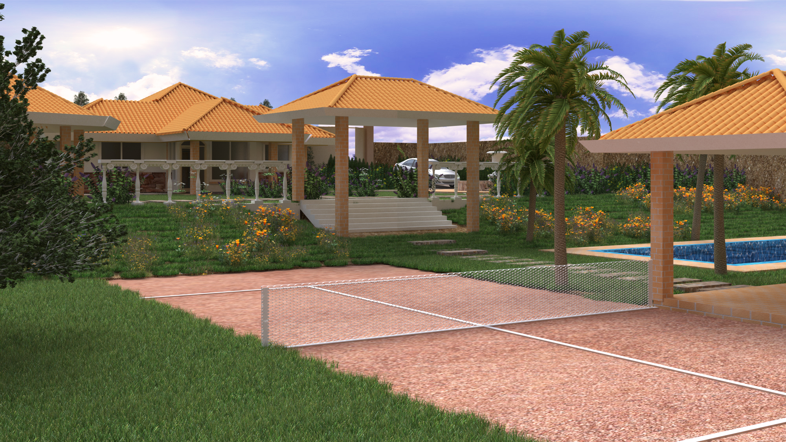
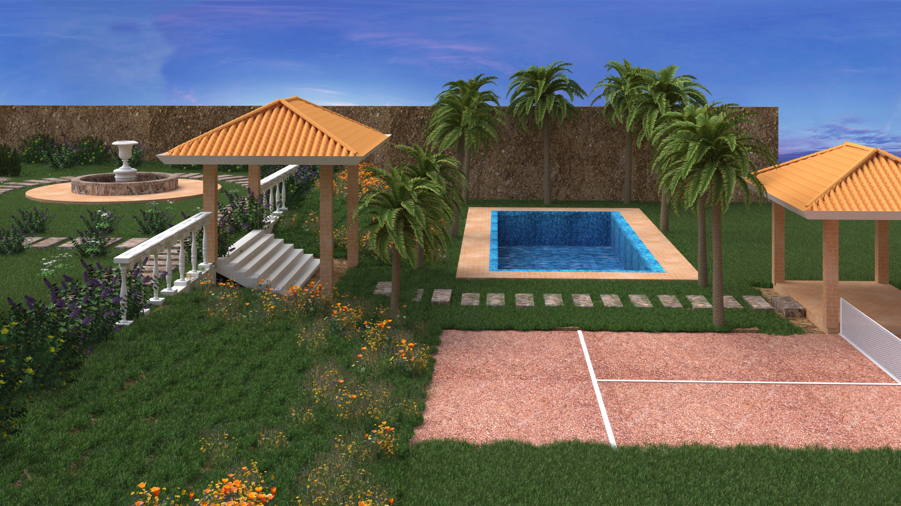

Arquitectura · Santander · Colombia
El primer proyecto construido. Una casa campestre en Santander que lleva ya una vida dentro, con jardines, piscina, cancha y la presencia tranquila de una arquitectura que honra el paisaje que la rodea.
Este proyecto marca un antes y un después en la trayectoria del estudio: el paso del papel a la realidad, del render a la piedra. Diseñado antes de la inteligencia artificial y de las herramientas de renderizado en tiempo real que dominarían los años siguientes, cada decisión fue tomada con lápiz, medida y tiempo.
La casa se organiza en torno a un eje central que articula la vivienda principal con una secuencia de espacios exteriores programados: pérgola de columnas, jardín perimetral, zona de piscina rodeada de palmas, cancha de uso múltiple y galería cubierta. El lenguaje arquitectónico —cubierta a varias aguas en teja española, muros en ladrillo y piedra, columnatas neoclásicas— responde a una tradición constructiva santandereana con la que el cliente tenía un vínculo afectivo profundo.
"El primer proyecto que se construyó. El que me enseñó que la arquitectura no termina cuando se entrega el plano."
Galería · 3 renders


